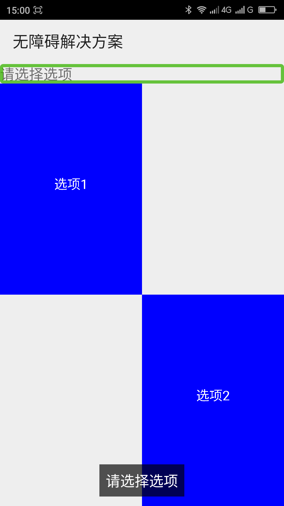
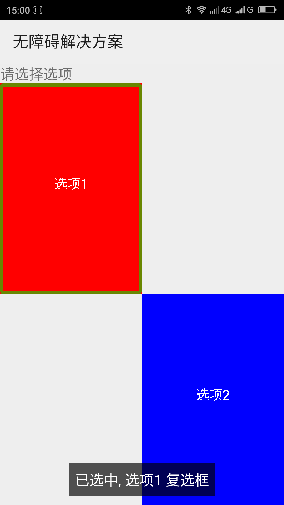

利用ExploreByTouchHelper使自定义控件支持无障碍____20160601
【问题描述】
有一些自定义控件的子视图不是一个继承与View或其子类的控件，而是利用画笔在控件上画出来一个区域，通过检测用户的onTouch()事件来响应用户事件。例如：在控件上话一个矩形，在矩形中显示文本，在onTouch()里面检测到用户触摸的是矩形区域就表示用户选中或取消选中此选项（本解决方案中的样例就是如此）。在这种情况下应为子控件不是继承与View或其子类的控件所以其子控件无法发送无障碍事件，这导致屏幕阅读器用户无法操作、无法知道子控件的内容、状态等。
【问题代码】
下面是一个自定义控件的代码，此自定义控件利用画笔话一个矩形区域,在这个矩形区域内显示文本，通过检测onTouch()来响应用户的操作。当用户触摸矩形区域的时候选中（或取消选中）触摸矩形区域。选中的时候展示的颜色为红色，没有选中时为蓝色。
复制内容
【问题解决方案描述】
用v4扩展包里面的ExploreByTouchHelper类给自定义控件中利用画画出来的子控件添加无障碍虚拟节点，添加虚拟节点之后屏幕阅读器用户可以通过屏幕阅读器知道子控件的信息、操作子控件。添加虚拟节点的方法是首先写一个继承与ExploreByTouchHelper的类，继承ExploreByTouchHelper类必须实现5个方法，分别是：getVirtualViewAt()，此方法通过x、yz坐标来寻找虚拟节点；getVisibleVirtualView()，此方法确定需要显示哪些虚拟节点；onPopulateEventVirtualView()，此方法填充虚拟节点的事件；onPopulateNodeVirtualView()，此方法填充虚拟节点的nodeInfo节点信息；onPerformActionForVirtualView(),响应无障碍事件的操作。在onPopulateNodeVirtualView()方法中必须给nodeInfo节点设置boundsInParent属性和text(或contentDescription)属性，否则程序会崩溃。在自定义视图初始化的时候用ViewCompat.setAccessibilityDelegate()方法（也可以用View.setAccessibilityDelegate()方法，但是此方法只能在api14以后使用）给视图设置无障碍代理。最后要继承View的dispatchHoverEvent()方法,在此方法中把HoverEvent发送给ExploreByTouchHelper类的无障碍代理。
【前后效果图对比】
|  |  |
| 优化前，网格无焦点； | 优化后，网格有焦点，且聚焦朗读“未选中 选项1 复选框” 双击朗读“选项1 已选中”，重新聚焦朗读“已选中 选项1 复选框”； |